Anatomy of the Leg
- The leg has four compartments, each with one main job and one nerve, with no exceptions. Anterior: dorsiflexion, deep fibular nerve. Lateral: eversion, superficial fibular nerve. Superficial posterior: plantarflexion, tibial nerve. Deep posterior: plantarflexion, inversion and toe flexion, also the tibial nerve.
- Anterior: tibialis anterior (dorsiflexes and inverts), extensor digitorum longus and extensor hallucis longus. Lateral: fibularis longus and brevis, which evert. Brevis pulls on the 5th metatarsal tuberosity, which a sudden inversion can avulse.
- Gastrocnemius gives power. It crosses the knee, so it plantarflexes only with the knee straight, and it also flexes the knee. Soleus does the endurance work and plantarflexes whatever the knee is doing. A standing calf raise is gastrocnemius; a seated one is soleus. Plantaris is the spare tendon used for grafts.
- Popliteus unlocks the knee. In the tarsal tunnel, behind the medial malleolus, the order from front to back is "Tom, Dick, And Not Harry": tibialis posterior, flexor digitorum longus, posterior tibial Artery (with its veins), tibial Nerve, flexor hallucis longus.
- The popliteal artery splits into the anterior tibial, which goes through the top of the interosseous membrane and becomes the dorsalis pedis (a pulse on the top of the foot), and the posterior tibial, which gives off the fibular artery. Valves, the arteriovenous pump and the musculovenous pump return blood uphill; when the valves fail, you get varicose veins.
- The common fibular nerve wraps around the fibular neck, just under the skin. Injury there causes foot drop and numbness of the dorsum of the foot plus the first web space. The superficial fibular nerve supplies the dorsum of the foot; the deep fibular supplies only the first web space. The sural nerve supplies the lateral foot and the saphenous the medial leg.
Learning Objectives
- Identify the bones and landmarks of the leg and foot, on drawings and on x-rays.
- Describe the four compartments of the leg: their muscles, actions and nerves. The lab guide says exact origins and insertions won't be tested.
- Trace the arteries, veins and nerves of the leg, and relate them to compartment syndrome, varicose veins, foot drop and nerve entrapments.
Dr. Charys Martin, about an hour over seven recordings. They cover the introduction and osteology, the anterior, lateral and posterior compartments, and the neurovasculature, plus two knowledge-check feedback videos. Dr. Martin asks you to connect this to the regions above (the thigh and knee) and below (the foot and ankle). It's prep for next week's Knee, Leg, Ankle & Foot lab, with the Knee, Parts 1 and 2. Attachments are left out of the tables below except where they matter clinically; the slides show them.
Bones and Compartments
Osteology of the leg and foot, the fascia, and the movements.
Bones of the Leg and Foot
| Bone | Key points |
|---|---|
| Tibia | The leg's weight-bearing bone. It lies just under the skin anteromedially (the "shin bone"), so its periosteum bruises easily. Its condyles form the tibial plateau; the tibial tuberosity takes the patellar tendon; the soleal line on its back is where soleus arises; the medial malleolus passes weight to the talus. |
| Fibula | Posterolateral to the tibia. Its head articulates with the tibia above; its lateral malleolus grips the talus below, along with the medial malleolus. It bears no weight, which makes it the bone of choice for grafts; you can walk, run and jump without part of it. |
The tibia breaks most often at its narrowest point, between the middle and distal thirds, which is also where its blood supply is poorest. The fibula breaks most often just above the lateral malleolus, when extreme inversion drives the talus against it. The interosseous membrane is strong, so when the tibia breaks the fibula sometimes goes with it.
The foot is built like the hand: it has seven tarsal bones in place of the eight carpals, then metatarsals and phalanges.
| Bone | Key points |
|---|---|
| Talus | The link between the leg and the foot: it sits between the medial and lateral malleoli, on the calcaneus and behind the navicular. It's the only bone in the body with no muscle or tendon attachments. It passes weight from the tibia to the calcaneus and the forefoot. |
| Calcaneus | The heel and the largest foot bone; it passes weight to the ground. The calcaneal tuberosity at the back takes the calcaneal (Achilles) tendon. The sustentaculum tali, on its medial side, is a shelf for the talus and a pulley for the flexor hallucis longus tendon. |
| Navicular | Boat-shaped, in front of the talus. A key ligament attachment: its tuberosity anchors the spring (calcaneonavicular) ligament, which holds up the medial longitudinal arch. |
| Cuboid, cuneiforms | "Nice to know, not need to know." The cuboid is the most lateral tarsal. The medial, intermediate and lateral cuneiforms sit in front of the navicular, and their wedge shape builds the transverse arch. |
| Metatarsals, phalanges | The tuberosity of the 5th metatarsal is where fibularis brevis inserts. A sudden inversion can make brevis pull it off: an avulsion fracture. Metatarsals also break when a heavy object lands on the foot, and in the "dancer's fracture", when a ballet dancer loses balance and comes down with all their weight on the metatarsals. |
| Sesamoid bones | Two under the first metatarsal head, in the flexor hallucis brevis tendons. Like those in the hand, they increase the muscles' mechanical advantage. The patella is the body's biggest sesamoid. |
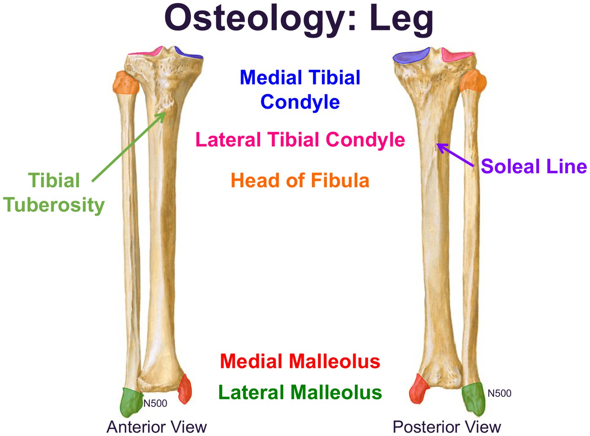
Tibia and fibula. Slide from the deck (Netter).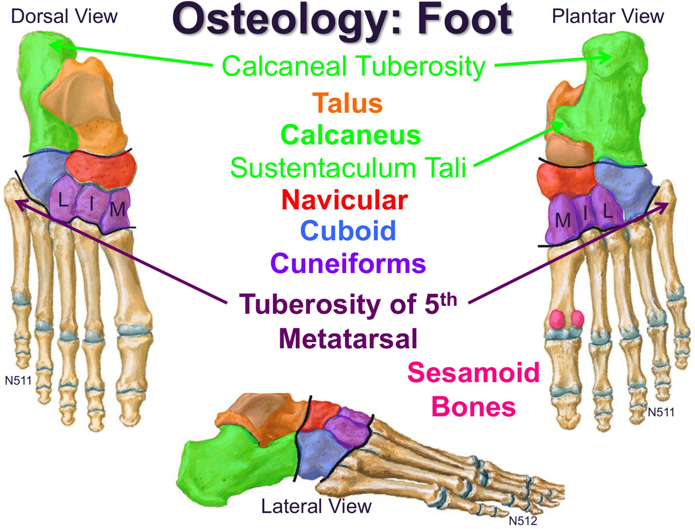
The tarsals. Slide from the deck (Netter).Knowledge checks: label the x-rays
Leg radiograph (AP, fibula on the left): A head of the fibula, B neck of the fibula, C fibular shaft, D lateral malleolus, E intercondylar eminence, F tibial shaft, G medial malleolus, H talus, tucked up between the malleoli. Notice how far down the lateral malleolus reaches beside the talus.
Foot radiograph (dorsoplantar): A metatarsals, B tuberosity of the 5th metatarsal, C cuboid, D calcaneus, E lateral malleolus, F phalanges of the big toe, G cuneiforms, H navicular, I talus, J medial malleolus.
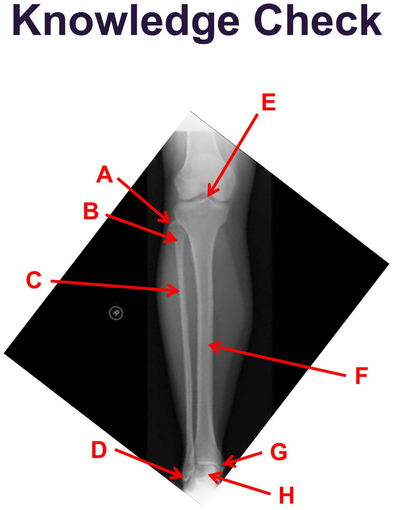
The leg x-ray. Slide from the deck.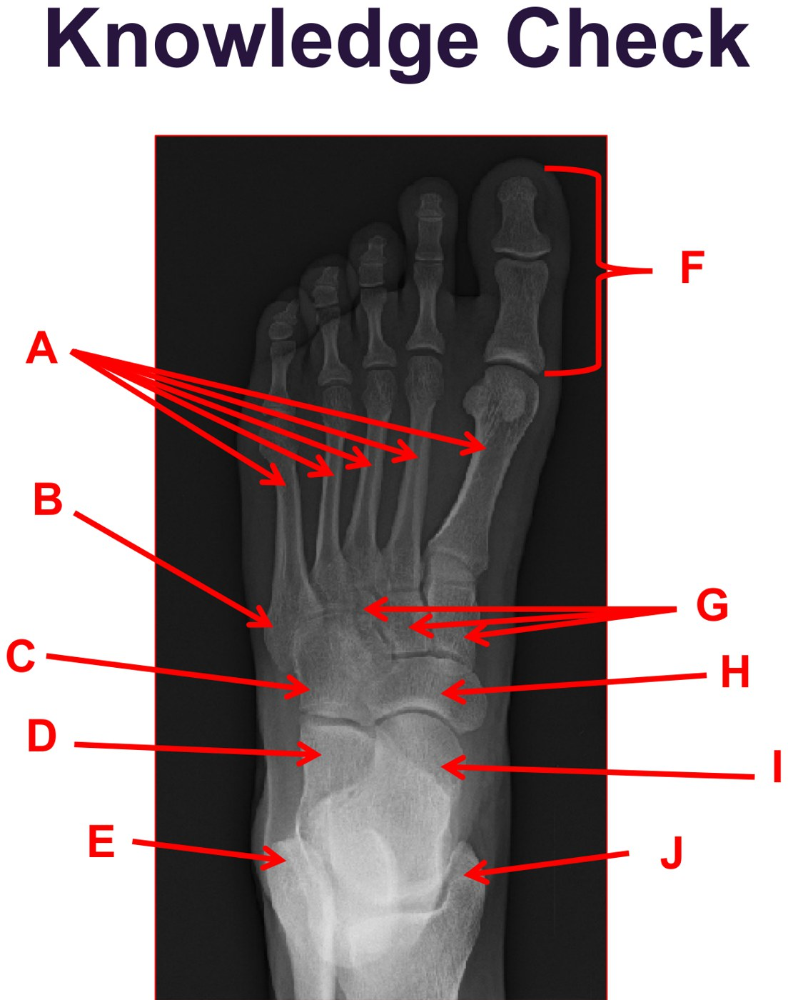
The foot x-ray. Slide from the deck.Fascia and Compartments
As everywhere else in the limbs, group the leg muscles by compartment, each with a common function and a common innervation. A thick deep fascia, the crural fascia, wraps the whole leg. The tibia, fibula, interosseous membrane and the anterior and posterior intermuscular septa divide it into anterior, lateral and posterior compartments. The transverse intermuscular septum then splits the posterior compartment into superficial and deep parts.
| Compartment | Where | Main job | Nerve | Artery |
|---|---|---|---|---|
| Anterior | Just lateral to the tibia: the meaty part beside your shin | Dorsiflexion | Deep fibular | Anterior tibial |
| Lateral | Lateral to the fibula | Eversion | Superficial fibular | Branches of the fibular |
| Superficial posterior | The calf | Plantarflexion | Tibial | Posterior tibial |
| Deep posterior | Between the interosseous membrane and the transverse septum | Plantarflexion, inversion, toe flexion | Tibial | Posterior tibial and fibular |
"Fibular" and "peroneal" are both acceptable; clinicians tend to say peroneal. Thickenings of fascia called retinacula hold the tendons against the ankle so they don't bowstring. The superior and inferior extensor retinacula bind the anterior tendons; the inferior one is Y-shaped. The superior and inferior fibular retinacula bind the lateral tendons. The flexor retinaculum runs from the medial malleolus to the calcaneus and roofs the tarsal tunnel.
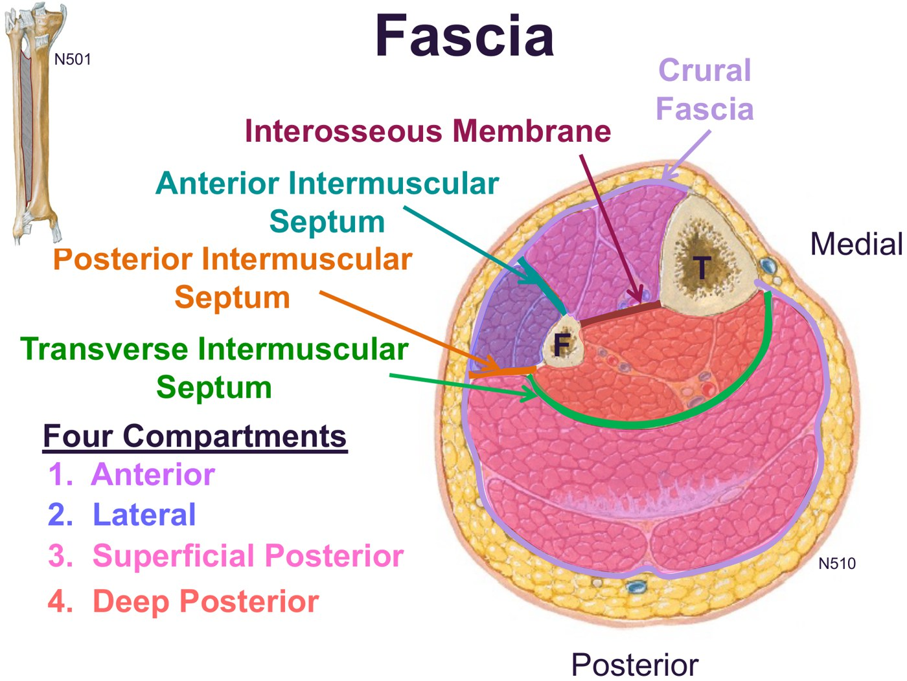
The fascia seals the anterior, lateral and posterior compartments at the joints. Neither swelling nor infection can spread from one compartment to the next. When pus, or inflammation from strenuous or unaccustomed exercise, raises the pressure inside a compartment, the nerves get pinched and the arteries compressed. That's compartment syndrome: painful, with too little oxygen reaching the muscle and bone. A fasciotomy relieves the pressure and lets any infection be debrided. Shin splints are a mild form of anterior compartment syndrome: microtrauma to the tibial periosteum where the anterior compartment muscles attach, especially tibialis anterior. They hit inactive people who suddenly walk or run long distances, and runners who skip their warm-up or cool-down.
Movements: dorsiflexion brings the toes toward the shin and plantarflexion points them. Inversion turns the sole inward; it's the classic rolled ankle. Eversion turns the sole outward. You can invert much further than you can evert, because the lateral malleolus reaches lower than the medial and the bone blocks eversion. You don't use inversion and eversion much as big movements, but when you balance on something wobbly (Dr. Martin's example is a Bosu ball), the invertors and evertors are constantly trading off to steady the ankle.
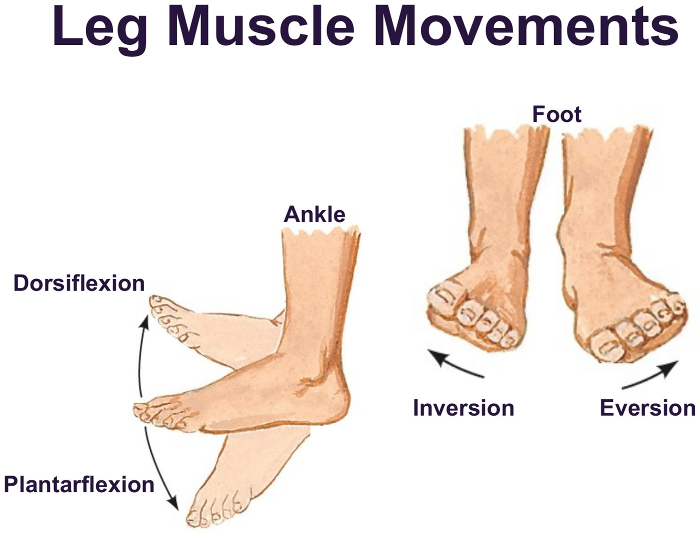
Muscles of the Leg
One compartment at a time. Each compartment's nerve is on its common slide, because there are no exceptions in the leg.
Anterior Compartment: Dorsiflexors
Four muscles, all supplied by the deep fibular nerve, all dorsiflexing the ankle.
| Muscle | Action | Point |
|---|---|---|
| Tibialis anterior | Dorsiflexes the ankle; inverts the foot | The most anterior and medial muscle: the one you feel beside the shin. It ends on the medial side of the foot, which is why it inverts. Shin splints start where it attaches to the tibia. |
| Extensor digitorum longus | Dorsiflexes; extends the lateral four toes | Lateral to and partly deep to tibialis anterior; splits into four tendons |
| Extensor hallucis longus | Dorsiflexes; extends the big toe | The deepest of the three, lying on the interosseous membrane. "Hallux" means the big toe. |
| Fibularis (peroneus) tertius | Weakly helps dorsiflexion and eversion; may help proprioception | A grey-box muscle you don't need to know. It usually shares a belly with extensor digitorum longus and inserts on the dorsum of the 5th metatarsal base. About 20% of people don't have it. |
| Dorsum of the foot (also the deep fibular nerve) | ||
| Extensor digitorum brevis | Helps extend toes 2–4 | Works with extensor digitorum longus |
| Extensor hallucis brevis | Helps extend the big toe | Works with extensor hallucis longus |
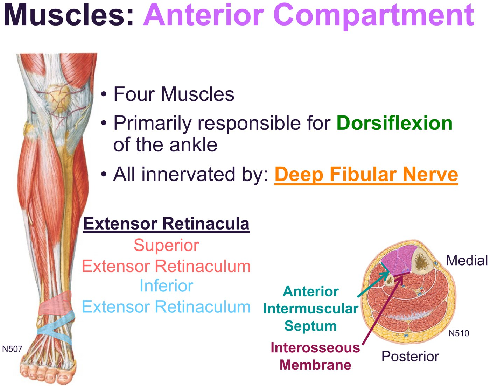
Knowledge check
Label the dissected anterior compartment (cadaveric photos, so not shown). Tibialis anterior is the meaty muscle beside the tibia. Extensor digitorum longus is the tendon that splits into four. Extensor hallucis longus has its belly deep against the interosseous membrane and its tendon running to the big toe. The extra little tendon running with extensor digitorum longus to the 5th metatarsal is fibularis tertius: you don't need to know it, but that's what it looks like if you find it.
Lateral Compartment: Evertors
Two muscles, one superficial and one deep, both supplied by the superficial fibular nerve, both evert the foot. Their tendons are held behind the lateral malleolus by the fibular retinacula.
| Muscle | Action | Point |
|---|---|---|
| Fibularis (peroneus) longus | Everts the foot; weakly plantarflexes; supports the transverse arch | The superficial one. Its long tendon loops behind the lateral malleolus and then under the foot to the medial plantar foot (the base of the 1st metatarsal and the medial cuneiform). |
| Fibularis (peroneus) brevis | The same three actions | Deep to longus, arising lower on the fibula. It ends on the tuberosity of the 5th metatarsal, the site of the inversion avulsion fracture. |
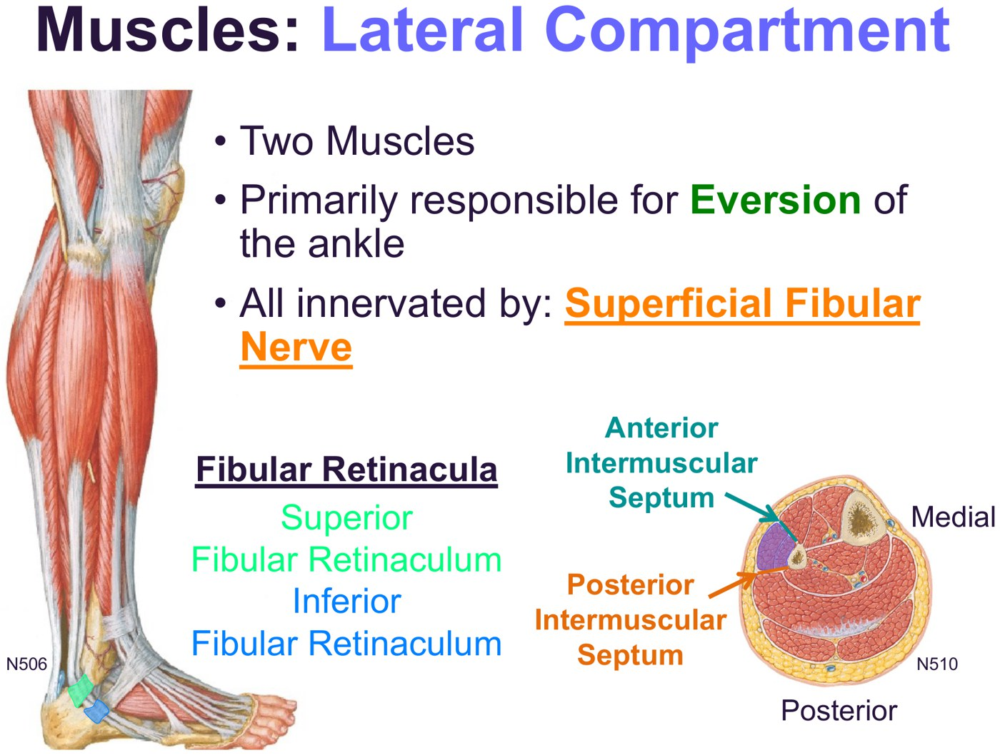
Superficial Posterior Compartment: the Calf
This is the largest compartment, split by the transverse intermuscular septum. The superficial part holds three muscles, all supplied by the tibial nerve, and they're the strong plantarflexors. All three end on the back of the calcaneus via the calcaneal tendon. Dr. Martin's take: "Achilles tendon" (named after the myth of the arrow) is correct, but "calcaneal tendon" is more correct.
| Muscle | Action | Point |
|---|---|---|
| Gastrocnemius | Plantarflexes the ankle when the knee is extended; raises the heel in walking; flexes the knee | The "glory muscle", like biceps: it takes the credit but doesn't do most of the work. Its two heads, from the medial and lateral femoral condyles, form the lower border of the popliteal fossa and give dynamic support behind the knee. It has fast-twitch fibres, for power. |
| Soleus | Plantarflexes the ankle, always | It does the work. It's the big belly deep to gastrocnemius, with a wide origin from the tibia (the soleal line) and fibula. It has slow-twitch fibres, for endurance, and carries you around all day. |
| Plantaris | Weak plantarflexion, if anything (perhaps proprioception) | Tiny, with a "dental-floss" tendon running beside the calcaneal tendon. All you need to know is that it exists and is used for tendon grafts; losing it costs no function. |
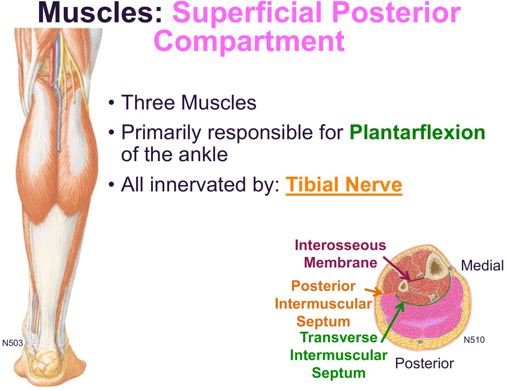
In a standing calf raise the knee is straight, so gastrocnemius, which crosses the knee, has the mechanical advantage and is the prime mover. In a seated calf raise the knee is bent, which takes gastrocnemius out of the picture: it can't plantarflex at all with the knee flexed. Soleus becomes the prime mover. Soleus still works in the standing raise, and the weaker plantarflexors of the deep compartment help in both. A prime mover isn't the only muscle working.
| Clinical note | Detail |
|---|---|
| Calcaneal tendinitis | Microscopic tears in the tendon, usually a little above its attachment; common in runners. Long-term tendinitis can lead to rupture. |
| Calcaneal tendon rupture | Usually in poorly conditioned people, during a forceful plantarflexion: an audible snap, then sudden calf pain. A complete rupture leaves a palpable gap, and the patient can't plantarflex against resistance. Surgery is usually advised for the young and active; non-surgical care may be enough for older, non-athletic patients. |
Deep Posterior Compartment and the Tarsal Tunnel
Four muscles, again all supplied by the tibial nerve, so the whole posterior compartment, superficial and deep, is tibial. The three long ones pass under the flexor retinaculum, behind the medial malleolus, through the tarsal tunnel, the leg's version of the carpal tunnel.
| Muscle | Action | Point |
|---|---|---|
| Popliteus | Unlocks the knee: rotates the femur laterally about 5° on a fixed tibia (or the tibia medially when the foot is free); weakly flexes the knee | It sits so high that it isn't in the leg cross-section. Its tendon arises from the lateral femoral condyle and lateral meniscus. The hamstrings are the strong knee flexors. |
| Flexor digitorum longus ("Dick") | Flexes the lateral four toes; plantarflexes; supports the longitudinal arches | In the calf it's the most medial, right against the tibia; it splits into four tendons. Toe flexion is curling the toes under, exactly as in the fingers. |
| Tibialis posterior ("Tom") | Plantarflexes (assisting gastrocnemius and soleus); inverts the foot; supports the longitudinal arch | The deepest, lying on the interosseous membrane. In the lab you may need to pull the two flexors aside to find it. It has a wide insertion on the medial plantar foot, mainly the navicular tuberosity. |
| Flexor hallucis longus ("Harry") | Flexes the big toe; weakly plantarflexes; supports the medial longitudinal arch | The most lateral, from the fibula. Its tendon loops under the sustentaculum tali, which acts as a pulley for a powerful toe-off: the big toe is the last thing to leave the ground in every step. |
Behind the medial malleolus, from anterior to posterior, the tarsal tunnel holds Tibialis posterior, flexor Digitorum longus, the posterior tibial Artery, the tibial Nerve and flexor Hallucis longus: "Tom, Dick, And Not Harry". The other version, "Tom, Dick, A Very Nervous Harry", adds the posterior tibial Veins: an artery always has 2–3 veins with it. The tendon order isn't the muscle order. In the calf, from medial to lateral, it's Dick, Tom, Harry, because the tibialis posterior tendon crosses deep to flexor digitorum longus on its way to the ankle. Harry stays the most lateral throughout and goes off on his own under the sustentaculum tali.
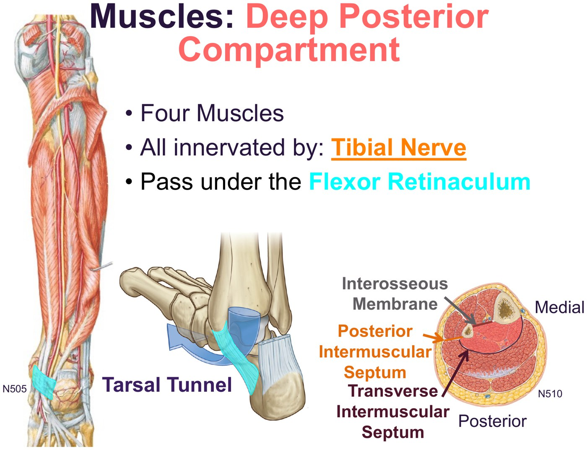
Deep posterior compartment and the tarsal tunnel. Slide from the deck (Netter).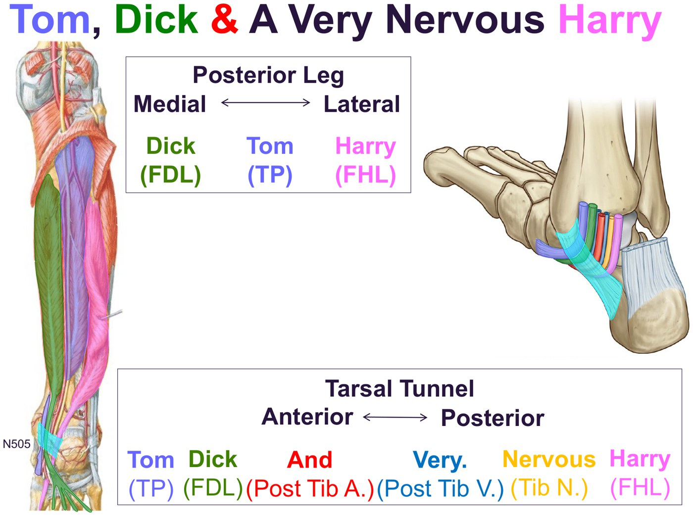
The order in the calf vs the tunnel. Slide from the deck.Tarsal tunnel syndrome (notes): swelling of the tendon sheaths in the tunnel compresses the tibial nerve under the flexor retinaculum. The most common symptom is heel pain.
Knowledge checks
Which muscle is the prime mover in a standing calf raise, and in a seated one? → gastrocnemius standing (knee extended), soleus seated (knee flexed).
Label the MRI cross-section of a right leg. A cross-section is viewed from the feet up, so with the tibia in front the fibula is on the left. Dr. Martin admits this one is harder than an exam would ask. Anterior compartment: A tibialis anterior, the meaty muscle beside the tibia; B extensor digitorum longus, more lateral; C extensor hallucis longus, deep on the interosseous membrane near the fibula. Lateral: D fibularis brevis, against the fibula, and E fibularis longus over it. Superficial posterior: F the medial head of gastrocnemius and G soleus, the big triangle. Deep posterior: H flexor digitorum longus, the most medial, against the tibia; I tibialis posterior, deep on the membrane; J flexor hallucis longus, the most lateral, toward the fibula. (The letters follow the module's answer order, which matches the image.)
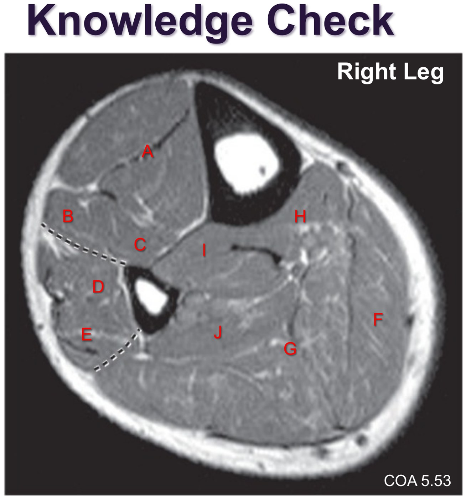
Neurovasculature
Arteries, veins and venous return, then the nerves.
Arteries
The femoral artery gives the profunda femoris, whose perforating branches supply the posterior thigh. It then passes through the adductor hiatus to become the popliteal artery behind the knee. At the lower border of the popliteal fossa, the popliteal artery splits into the anterior and posterior tibial arteries.
| Artery | Course and territory |
|---|---|
| Anterior tibial | Passes forward through a gap at the top of the interosseous membrane into the anterior compartment. There it runs with the deep fibular nerve, deep to tibialis anterior. Between the malleoli it becomes the dorsalis pedis on the dorsum of the foot, where you can feel a pulse by pressing it against the bones beneath. Dorsalis pedis gives the lateral tarsal and arcuate arteries (the arcuate gives the 2nd–4th dorsal metatarsals), then ends as the deep plantar and 1st dorsal metatarsal arteries. |
| Posterior tibial | Stays posterior, in the deep posterior compartment with the tibial nerve, between flexor digitorum longus and tibialis posterior. It supplies the posterior compartment and reaches the foot behind the medial malleolus, through the tarsal tunnel. |
| Fibular (peroneal) | The largest branch of the posterior tibial, given off near its origin. It runs down beside the fibula (within flexor hallucis longus) and sends branches to the posterior and lateral compartments. |
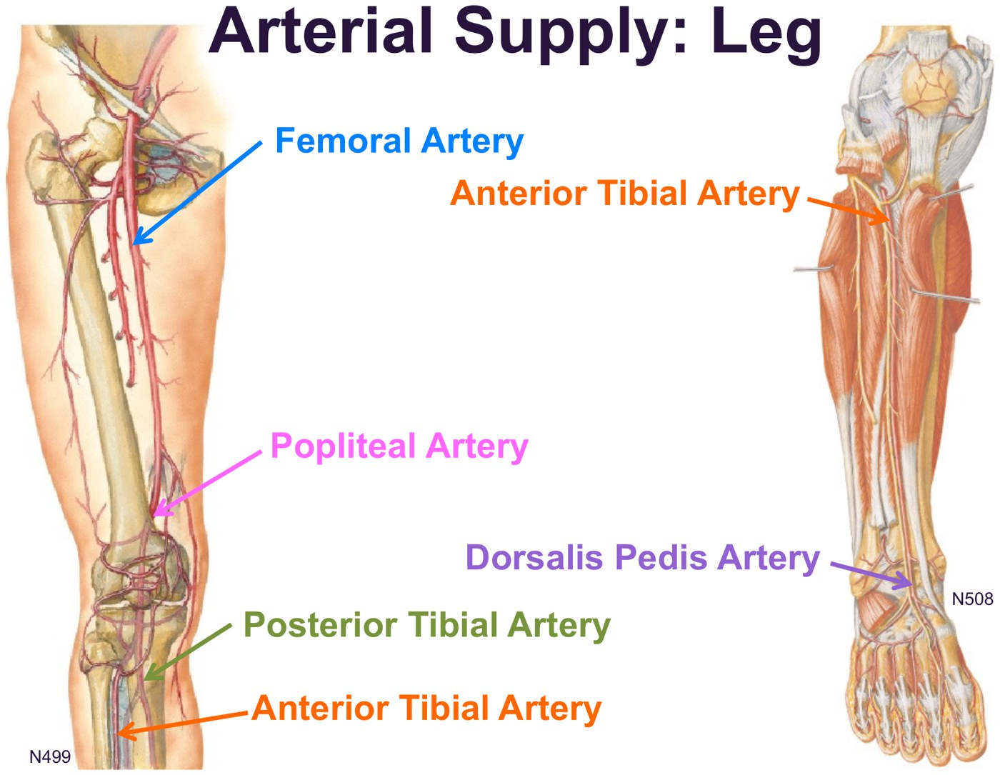
Anterior tibial to dorsalis pedis. Slide from the deck (Netter).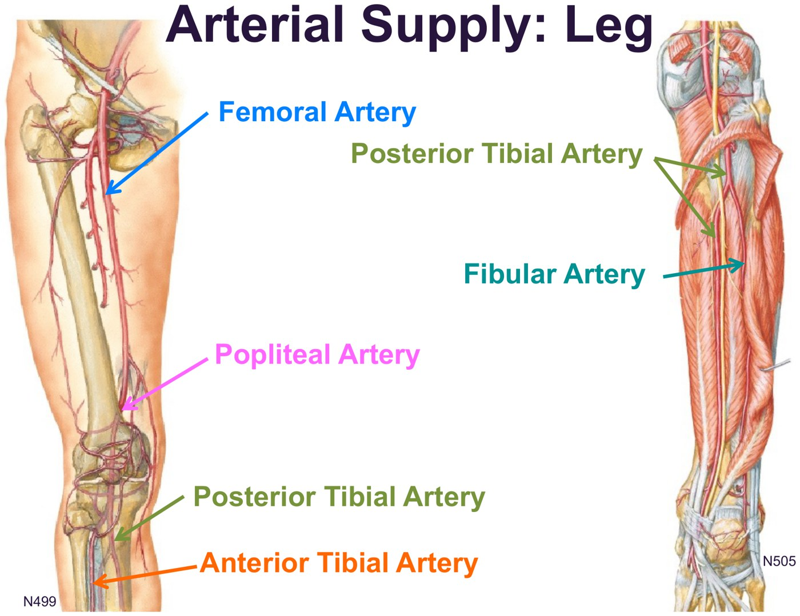
Posterior tibial and fibular arteries. Slide from the deck (Netter).Veins and Venous Return
The deep veins lie deep to the deep fascia, accompanying every major artery, usually in pairs or threes. The superficial veins, in the subcutaneous tissue, travel alone. Both have valves, more of them in the deep veins. Perforating veins pierce the deep fascia, and their valves let blood flow only from superficial to deep, away from the skin.
| Superficial vein | Course |
|---|---|
| Great saphenous | Starts where the dorsal venous arch meets the dorsal vein of the big toe. It passes in front of the medial malleolus, up the medial leg and behind the medial condyle of the knee. At the top of the thigh it goes through the saphenous opening in the fascia lata into the femoral vein. |
| Small saphenous | Starts at the arch and the dorsal vein of the little toe and runs lateral to the calcaneal tendon. It pierces the deep fascia, travels between the two heads of gastrocnemius and drains into the popliteal vein. |
| Getting blood back uphill | How |
|---|---|
| Valves | Their cusps let blood through toward the heart. When it starts to fall back, the cusps fill and close, opening and closing with every beat like the aortic and pulmonary valves. |
| Arteriovenous pump | The paired deep veins share a tight connective-tissue sheath with their artery. Each time the artery expands with a pulse, it flattens the veins and pushes their blood up. The arrangement also works as a countercurrent heat exchanger. |
| Musculovenous pump | Contracting muscle bellies expand against the unyielding deep fascia (the crural fascia, the fascia lata) and squeeze the deep veins, "milking" the blood toward the heart. The valves keep it from going back down. |
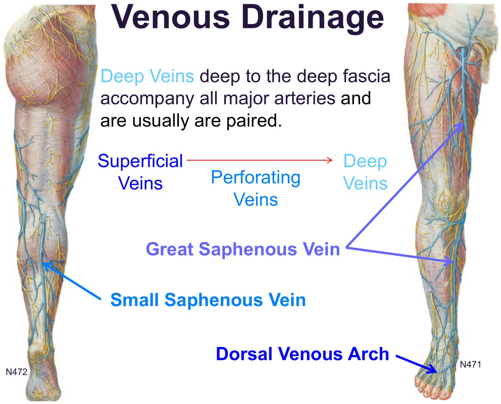
Superficial veins: great and small saphenous. Slide from the deck (Netter).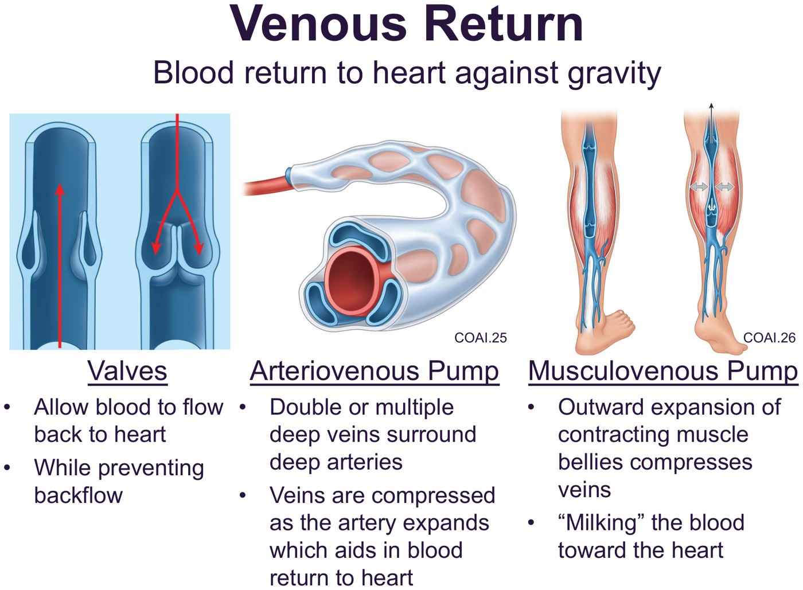
Three ways back to the heart. Slide from the deck (Clinically Oriented Anatomy).The great saphenous vein and its tributaries dilate until the valve cusps no longer meet. Blood then flows down the veins instead of up, and they become varicose. They're common in the posteromedial leg and can be uncomfortable. They can affect any vein but are most visible in the superficial ones. In laser treatment, the heat damages the vein, scar tissue closes it off, and the closed vein loses its blood supply and dies; after a year or two it's likely to disappear.
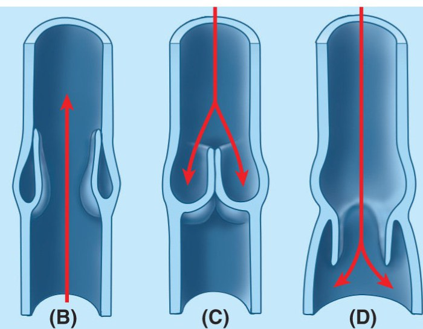
Nerves
The sciatic nerve (L4–S3) is really two nerves in one sheath, the tibial and common fibular. They separate at the top of the popliteal fossa, though they can divide anywhere higher up.
| Nerve | Course | Supplies |
|---|---|---|
| Tibial | Down the back of the leg with the posterior tibial artery, then through the tarsal tunnel; in the foot it divides into the medial and lateral plantar nerves | The whole posterior compartment, superficial and deep, then the sole. Gives off the medial sural cutaneous nerve. |
| Common fibular (peroneal) | Through the lateral popliteal fossa, then wraps around the neck of the fibula, just under the skin, and splits in two | Its superficial and deep branches; gives off the lateral sural cutaneous nerve |
| Superficial fibular | Runs in the lateral compartment between fibularis longus and brevis, then pierces the crural fascia to become cutaneous | Fibularis longus and brevis; skin of the anterolateral leg and dorsum of the foot |
| Deep fibular | Arises between fibularis longus and the fibular neck, enters the anterior compartment with the anterior tibial artery, deep to tibialis anterior, then dives into the foot | All anterior compartment muscles and the muscles on the dorsum of the foot; only the skin of the first web space |
Why is the "deep" one anterior and the "superficial" one lateral? Both come from behind. The deep branch travels further, into the anterior compartment, and stays deep all the way into the foot. The superficial branch surfaces to supply the skin of the foot.
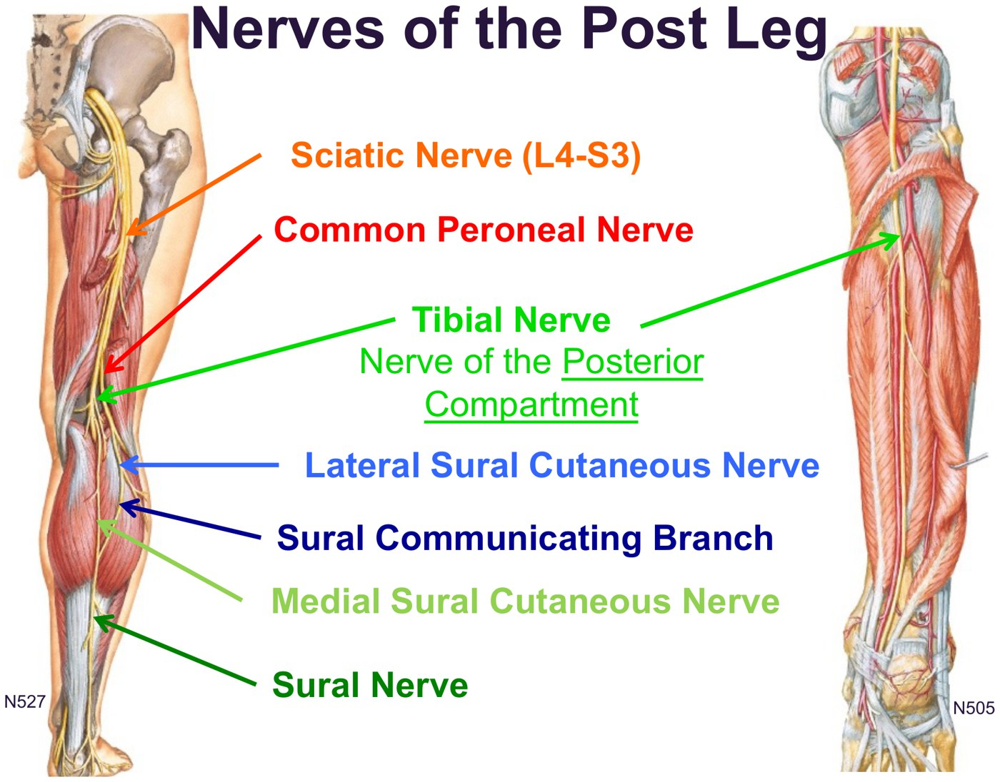
Tibial nerve and the sural contributions. Slide from the deck (Netter).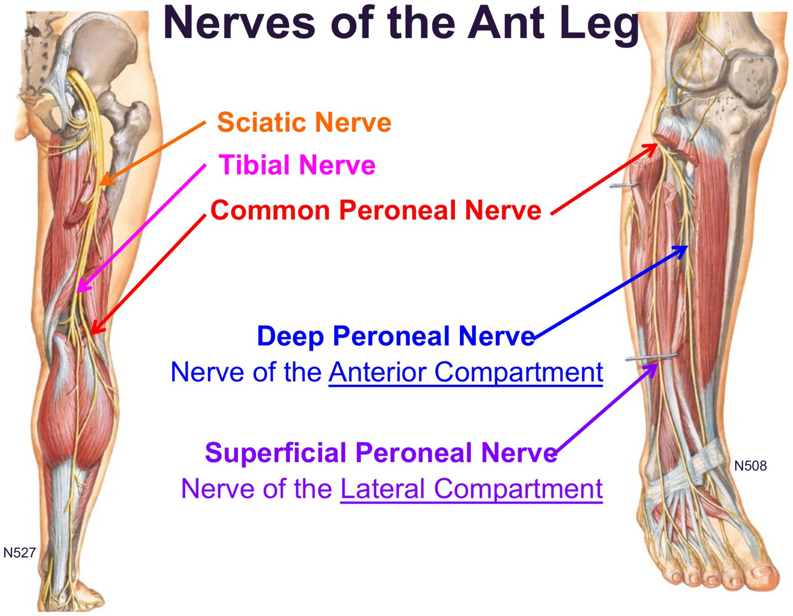
Common fibular, deep and superficial. Slide from the deck (Netter).| Skin nerve | From | Territory |
|---|---|---|
| Saphenous | Femoral | Medial leg and foot |
| Lateral sural cutaneous | Common fibular | Lateral (posterolateral) leg |
| Medial sural cutaneous | Tibial | Posterior leg |
| Sural | Joined by both sural cutaneous nerves | Lateral ankle and foot |
| Superficial fibular | Common fibular | Anterolateral leg and the dorsum of the foot, except the first web space |
| Deep fibular | Common fibular | The first web space only |
| Medial and lateral plantar | Tibial | The sole |
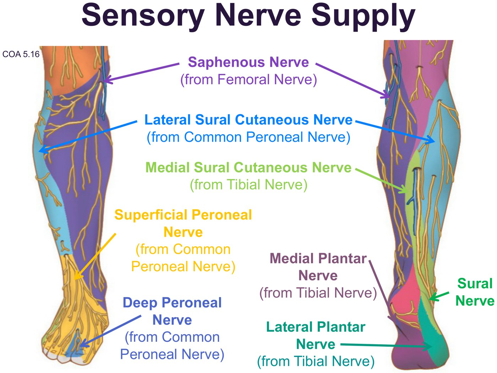
The common fibular nerve is easily hurt where it wraps around the fibular head and neck, just under the skin. If the dorsum of the foot and the first web space are both numb, the common fibular nerve is damaged. If there's a deficit but the first web space still has feeling, the lesion is below the split, in the superficial fibular nerve only. If the dorsum has feeling but the first web space is numb, with motor deficits, it's the deep fibular nerve.
| Clinical note | Detail |
|---|---|
| Common fibular nerve injury: foot drop | An injury at the fibular neck knocks out every muscle of the anterior and lateral compartments and the skin of the dorsum, so the foot can't dorsiflex. To keep the toes from catching in the swing phase, patients may hike the hip on that side (a waddling gait), swing the leg out to the side (a swing-out gait) or lift the whole leg high (a steppage gait). They swing the leg further forward to land on the heel. Without the dorsiflexors lowering the forefoot after heel strike (their eccentric contraction), the foot slaps down uncontrolled. |
| Superficial fibular entrapment | Repeated ankle sprains can stretch it: pain and paresthesia over the anterolateral leg and dorsum of the foot, worse with activity |
| Deep fibular entrapment | An overused, inflamed anterior compartment, or tight boots (ski boots, soccer cleats) pressing it under the inferior extensor retinaculum: pain on the dorsum of the foot radiating into the first web space |
Knowledge check
Match each nerve to the compartment it supplies. → deep fibular to the anterior compartment, superficial fibular to the lateral, tibial to both the deep and superficial posterior compartments.
Built from Dr. Charys Martin's “Anatomy of the Leg” module: seven recordings (introduction and osteology, with its knowledge-check feedback; the anterior, lateral and posterior compartments, with their feedback video; neurovasculature), the knowledge checks, the 44-slide detailed deck and her 8-page notes. Left out and described in text: the photos on the movements slide, the calf-raise photos, the knowledge-check dissections and the photos of varicose legs. The tables leave out attachments except where they matter clinically, and leave out the slides' myotomes. Notes: the recording says the lateral malleolus helps prevent “inversion”; it reaches lower than the medial malleolus and limits eversion, which is why we can invert much further than we evert. The recording's “it is going to invert the ankle” for fibularis longus means evert. The recording presses the dorsalis pedis pulse “against the talus”; it's usually felt a little further down the dorsum, just lateral to the extensor hallucis longus tendon. The slides give the tarsal tunnel mnemonic two ways (“A Very Nervous Harry”, “And Not Harry”). Caption corrections: sustentaculum tali (“sustain Tacular ally”, “just intact limb tally”), gubernaculum (“goober anarchism”), cuneiforms (“uniforms”), crural fascia (“curl fascia”, “cruel fascia”), interosseous membrane (“interesting membrane”, “inner osseous”), eversion (“Eve version”), innervation (“innovation”), retinaculum (“retina macula”, “retina ocular”, “flexor inoculum”), tibialis anterior (“tibialis interior”), extensor digitorum longus (“extensor digital arm longus”), fibularis tertius (“Petronius tertius”, “Proteus Tertius”, “Peyronie’s tortious”), extensor hallucis longus (“Stands are Holocaust longest”), fibularis longus and brevis (“Erroneous Longus”, “Proteus brevis”), gastrocnemius (“gas docks”, “gas strokes”, “gas ox”), plantaris (“plan terrace”, “Planeteers”), calcaneal tendon (“cocaine heel tendon”), popliteus (“properties”), flexor hallucis longus (“flexor halex longus”), dorsalis pedis (“dorsal this artery”), saphenous (“great in this vein”, “softness”), arteriovenous pump (“atrial venous pump”), sural (“sterile”, “Searle”) and peroneal (“baronial”, “perennial”, “proteome”).